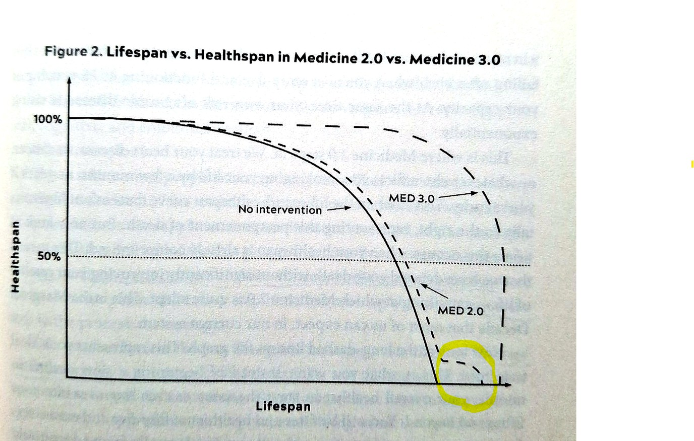

We often think of exercise as a choice.
We do it when we have time. We delay it when we are busy.
We start again only when our body begins to hurt.
But as we get older, the meaning of exercise changes. Exercise is no longer just about looking fit or looking young. It is about preparing our future body so that we can still use it with our own will.
What we truly fear is not simply death.
We want to walk, move, choose, connect with people, and live with dignity until the end.
But what if we lose that ability?
We may still be alive, but we may not be able to move freely.
We may not be able to enjoy the things we used to love.
We may find it difficult to make decisions for our own life.
That may be the real reason we fear aging.
More Important Than Lifespan
In the beginning of Lifespan, Dr. David Sinclair talks about his grandmother. When she was younger, she was active, lively, and full of energy. But as time passed, her energy and movement slowly disappeared. In her later years, she became so weak that it was hard to recognize the person she used to be. He says she lived until the age of 92, but the grandmother he remembered seemed to have disappeared long before that. [1]
Dr. Peter Attia explains this problem very clearly in Outlive. In his graph, the horizontal line shows lifespan, which means how long we live. The vertical line shows healthspan, which means how well our body and mind function during that time. [2]

In the graph, modern medicine, or Medicine 2.0, has succeeded in extending life to some degree. When people get sick, medicine can treat disease, perform surgery, and manage conditions with drugs. Because of this, people can live longer than before.
But the problem comes after that.
Even though lifespan has increased, many people spend a long time with greatly reduced physical and mental function.
The last part of the Medicine 2.0 line shows this clearly. Life is extended, but the quality of health has already dropped sharply.
This is the point we truly fear.
We do not simply want to live longer.
We do not want to spend many years unable to walk, move, choose,
and connect with people in the way we want.
That is not the kind of long life we hope for.
The graph also shows the goal of Medicine 3.0.
The goal is not only to delay death.
It is to delay the time when function drops sharply,
and to make that period as short as possible.
In other words, we want to live longer, but we also want to move longer, think longer, and live as ourselves for as long as possible.
What is one of the most powerful strategies for this goal?
Exercise.
Protecting muscle, maintaining balance, improving heart and lung function, and keeping our joints moving well should be major goals of exercise after 50. Exercise helps prepare our future self so that we do not spend too long in the weak and declining stage shown in Medicine 2.0.
What if we end up in this condition?
Our knees are already badly damaged. Most of our muscle has disappeared.
Our balance is poor, so even a small impact can make us fall.
Our blood sugar and blood pressure are serious, and we depend on many different medications.
At that point, even if we know exercise is necessary, our body may not be able to follow.
In that sense, exercise is insurance.
We do not buy insurance after an accident. We prepare it before the risk arrives.
Exercise is the same.
It is not something we should think of as, “I will do it later when I need it.”
We need to start before we need it.
Like insurance, exercise is something our future self will definitely need. So we should prepare it in advance. While we can still move, we need to protect our muscles, balance, joint movement, and heart and lung function.
We cannot completely avoid aging.
But we can delay the time when we lose the ability to live as ourselves.
Exercise is not a desire to live forever.
Exercise is insurance that protects the time we can live as ourselves.
References
[1] David A. Sinclair, Ph.D., with Matthew D. LaPlante,
Lifespan: Why We Age—and Why We Don’t Have To, Atria Books, 2019.
Key point referenced: the author’s reflection on his grandmother, aging, loss of vitality, and functional decline.
[2] Peter Attia, M.D., with Bill Gifford,
Outlive: The Science and Art of Longevity, Harmony Books, 2023.
Key point referenced: lifespan, healthspan, Medicine 2.0, Medicine 3.0, and the related graph.
Referenced section: p.39. Page numbers may differ depending on the edition or ebook format.